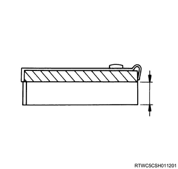
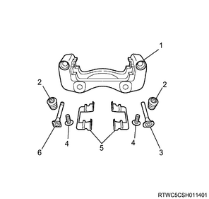

1. Inspect the brake assembly.
Note
1. Inspect the brake rotor.
Note
Standard： 27.0 mm { 1.063 in }
Limit： 25.0 mm { 0.984 in }
Note
Limit： 0.075 mm { 0.00295 in }
Note
Note
Limit： 0.023 mm { 0.00091 in }
Note
1. Inspect the disc brake pad.
Note
Standard： 10.0 mm { 0.394 in } Front disc brake
Limit： 1.5 mm { 0.059 in } Front disc brake

Note
Caution
1. Inspect the guide pin.
2. Inspect the lock pin.
Note

3. Inspect the boot.
Note
4. Inspect the dust seal.
Note